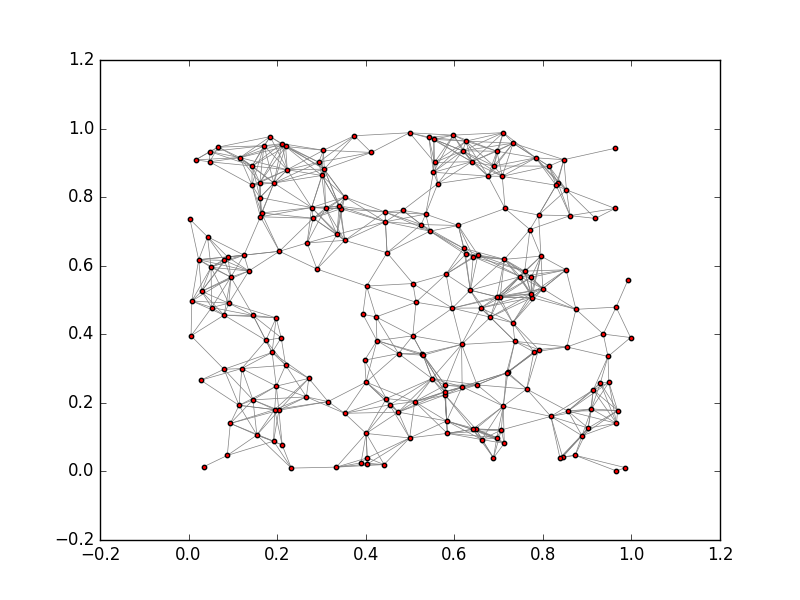
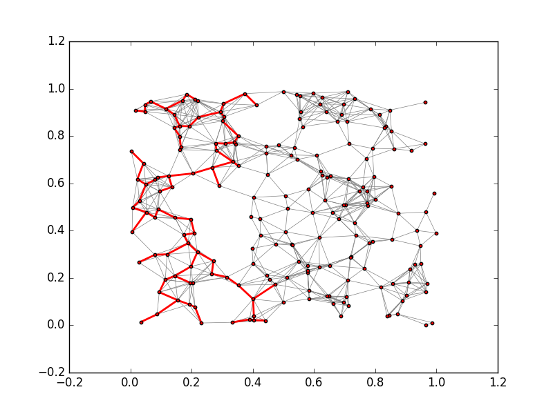
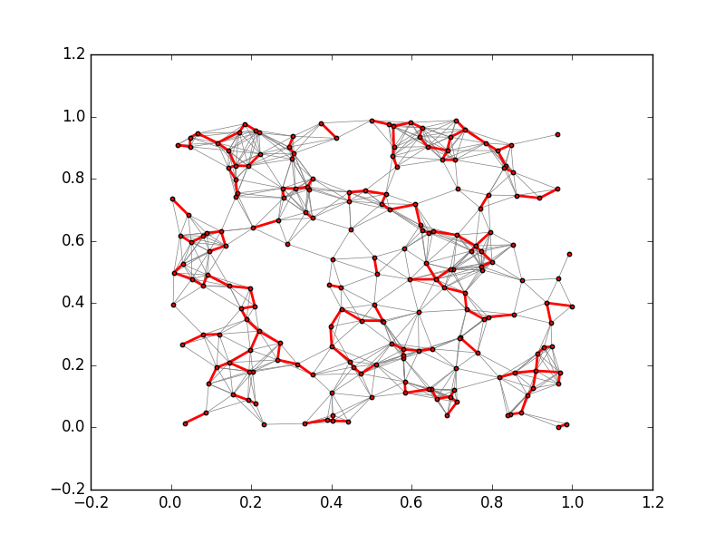
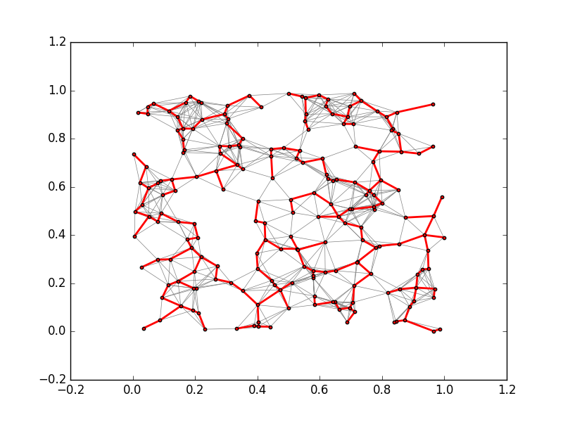

A undirected graph $G$ is a graph with:
$\{u, v\}\in E(G)$ has no direction.
Adjacency list
If $G$ is an undirected graph, we can create a directed graph, defined as:
- $V(H) = V(G)$, and
- for each
$\{u, v\}\in E(G)$, we have $(u, v)\in E(H)$ and $(v, u)\in E(H)$.
Let $G$ be an undirected graph. Consider that we have weights on the edges:
$$ w: E(G) \to \mathbb{R}^+ $$
Namely, the function $w$ maps edges to strictly positive real numbers.
We can use the distance between vertices as the weight:
$w(\{u, v\}) = d(\mathrm{pos}(u), \mathrm{pos}(v))$
where $\mathrm{pos}$ is the 2D position of the vertex.
Definition Spanning tree
A tree $T$ is called a spanning tree of $G$ if
$T$ is fully connected, and
$V(T) = V(G)$
Definition Minimal spanning tree (MST)
Let the weight of a graph $$w(H) = \sum_{e\in E(H)} w(e)$$
A MST, $T$, of a graph $G$ is a spanning tree of $G$ with the smallest possible $w(T)$.

! Not a spanning tree
! A (minimal) spanning tree
Prim’s algorithm
Kruskal’s algorithm
Problem:
Let $G$ be an undirected graph, with edge weights given by $w$. Let $r$ be a vertex in $V(G)$.
Compute a MST $T$ starting with $r$.
def prim(G, w, r):
...
We represent $T$ as a set of edges.
! Why don’t we need to remember the vertices of $T$?
Definition Minimal cut
Let $X\subseteq V(G)$ be a set of vertices in $G$. The minimal cut is an edge ${u, v}\in E(G)$ such that $u\in X$ and $v\not\in X$ with the smallest weight.
! There may be non-unique minimal cuts.
Theorem:
If $S$ is a subtree of a MST, and let $e$ be a minimal cut of $V(S)$, then $S\cup{e}$ is also a subtree of a MST.
Cool,
Start with just a root $X = {r}$, and keep adding minimal cuts of $X$.
def prim(G, w, r):
n = G.count_nodes()
X = set([r])
T = set([])
for i in range(n-1):
(u, v) = minimal_cut(G, X)
X.add(u, v)
T.add((u, v))
return T
! Warning: what happens if $G$ is not fully connected?
Find a MST by computing its edges.
def kruskal(G, w):
...
Theorem
Let $R$ and $S$ be two disjoin subtrees of a MST. If there exists an edge
$\{u, v\}$that is a minimal cut of $S$, and$u\in V(S)$and$v\in V(R)$, then$R\cup S$is also a subtree of a MST.
Cool,
Start with lots of small subtrees of a MST, and merge them with minimal cuts until we end up with just one tree that covers all the nodes.
Observation:
Every vertex by itself is a subtree of a MST (trivially).
The smallest edge is always a minimal cut.
Represent subtree by its vertices.
Definition: Partition
A partition of the vertices of $G$ is a collection of sets of vertices
$P = \{X_1, X_2, \dots X_n\}$, such that:
- They are all pairwise disjoint.
- Every vertex in $G$ appears in exactly one of the
$\{X_i\}$.- None of the
$X_i$is empty.
Operations on a parition P:
i = find_partition(P, v)
! Finds the index such that $v\in X_i$
join_partition(P, i, j)
! Replace $X_i, X_j$ from P, with $X_i\cup X_j$
def kruskal(G, w):
T = set([])
E = sorted(G.edges(), key=w)
P = [set([v]) for v in G.nodes()]
for e in E:
(u, v) = e
i = find_partition(P, u)
j = find_partition(P, v)
if not i == j:
T.add(e)
join_partition(P, i, j)
if len(P) == 1:
break
return T


Prim’s algorithm starts with a specific vertex, and grows the MST by computing minimal cuts.
Kruskal’s algorithm starts with $n$ subtrees, and uses the edges with the smallest weights to join them together, eventually into a single MST.
A simple undirected graph encoding using adjacency list:
A simple implementation of the MST algorithms:
! We will go through the code and the networkx library that it uses to draw the graphs in the lab.